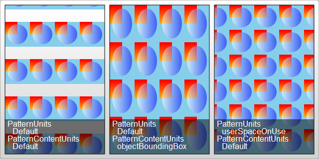

{{ PreviousNext("Web/SVG/Tutorial/Gradients", "Web/SVG/Tutorial/Texts") }}
Patterns are arguably one of the more confusing fill types to use in SVG. They're also very powerful, so they're worth talking about and getting at least a fundamental grasp on. Like gradients, the {{SVGElement('pattern')}} element should be put in the {{SVGElement("defs")}} section of your SVG file.
<svg width="200" height="200" xmlns="http://www.w3.org/2000/svg"> <defs> <linearGradient id="Gradient1"> <stop offset="5%" stop-color="white"/> <stop offset="95%" stop-color="blue"/> </linearGradient> <linearGradient id="Gradient2" x1="0" x2="0" y1="0" y2="1"> <stop offset="5%" stop-color="red"/> <stop offset="95%" stop-color="orange"/> </linearGradient> <pattern id="Pattern" x="0" y="0" width=".25" height=".25"> <rect x="0" y="0" width="50" height="50" fill="skyblue"/> <rect x="0" y="0" width="25" height="25" fill="url(#Gradient2)"/> <circle cx="25" cy="25" r="20" fill="url(#Gradient1)" fill-opacity="0.5"/> </pattern> </defs> <rect fill="url(#Pattern)" stroke="black" width="200" height="200"/> </svg>
{{ EmbedLiveSample('Patterns','220','220','/files/725/SVG_Pattern_Example.png') }}
Inside the {{SVGElement("pattern")}} element, you can include any of the other basic shapes you've included before, and each of them can be styled using any of the styles you've learned before, including gradients and opacity. Here, we've just drawn two rectangle elements inside the pattern (which overlap, and one of which is twice the size of the other and is used to fill in the entire pattern), and one circle.
The confusing thing about patterns is defining a unit system and their size. In the example above, we've defined a width and height attribute on the pattern element to describe how far the pattern should go before it begins repeating itself again. There are also x and y attributes available if you want to offset the start point of this rectangle somewhere within your drawing. The reason they've been used here is described below.
As with the gradientUnits attribute used above, patterns also have an attribute, patternUnits, which specifies the units that these attributes will take. It defaults to "objectBoundingBox" as it did above, so a value of 1 is scaled to the width/height of the object you're applying the pattern to. Since, in this case, we wanted the pattern to repeat 4 times horizontally and vertically, the height and width are set to 0.25. This means the pattern's width/height is only 0.25 of the total box size.
Unlike gradients, patterns have a second attribute, patternContentUnits, which describes the units system used inside the pattern element, on the basic shapes themselves. This attribute defaults to "userSpaceOnUse", the opposite of the patternUnits attribute. What this means is that unless you specify one or both of these attributes (patternContentUnits and patternUnits), the shapes you draw inside your pattern are being drawn in a different coordinate system than the pattern element is using, which can make things a bit confusing when you're writing this by hand.
To make this work in the example above, we had to consider the size of our box (200 pixels) and the fact that we wanted the pattern to repeat itself 4 times horizontally and vertically. This means that each pattern unit was a 50×50 square. The two rects and the circle inside the pattern were then sized to fit in a 50×50 box. Anything we had drawn outside that box wouldn't have been shown. The pattern also had to be offset by 10 pixels so that it would start in the upper-left corner of our box, so the x and y attributes of the pattern had to be adjusted to 10÷200 = 0.05.
The caveat here is that if the object changes size, the pattern itself will scale to fit it, but the objects inside will not. So while we would still have 4 repeating units inside the pattern, the objects composing that pattern would remain the same size, and you end up with large areas of nothing in between them. By changing the patternContentUnits attribute, we can put all the elements into the same unit system:
<pattern id="Pattern" width=".25" height=".25" patternContentUnits="objectBoundingBox"> <rect x="0" y="0" width=".25" height=".25" fill="skyblue"/> <rect x="0" y="0" width=".125" height=".125" fill="url(#Gradient2)"/> <circle cx=".125" cy=".125" r=".1" fill="url(#Gradient1)" fill-opacity="0.5"/> </pattern>
Now, because the pattern content is in the same unit system as the pattern, we don't have to offset the box so that the pattern starts in the correct place, and if the object size was changed to a larger one, the pattern would automatically scale so that it had the same number of objects and repeats inside it. This contrasts with the "userSpaceOnUse" system, where if the object changes the size, the pattern would stay the same and just repeat itself more times to fill the box.
As a slight aside, in Gecko circles seem to have trouble drawing if their radius is set to something less than 0.075 (it is currently unknown whether this is a bug in the pattern element or not). To work around that it is probably best to avoid drawing in "objectBoundingBox" units unless you have to.
Neither of these uses is what one would normally think of when you think of a pattern. Patterns usually have a set size and repeat themselves independently of what an object's shape is. To create something like this, both the pattern and its contents must be drawn in the current userSpace, so they don't change shape if the object does:
<pattern id="Pattern" x="10" y="10" width="50" height="50" patternUnits="userSpaceOnUse"> <rect x="0" y="0" width="50" height="50" fill="skyblue"/> <rect x="0" y="0" width="25" height="25" fill="url(#Gradient2)"/> <circle cx="25" cy="25" r="20" fill="url(#Gradient1)" fill-opacity="0.5"/> </pattern>
Of course, this means the pattern won't scale if you change your object size later. All three of the preceding examples are shown below on a rectangle that has been slightly elongated to a height of 300px, but I should note that it's not an exhaustive picture, and there are other options available depending on your application.

{{ PreviousNext("Web/SVG/Tutorial/Gradients", "Web/SVG/Tutorial/Texts") }}